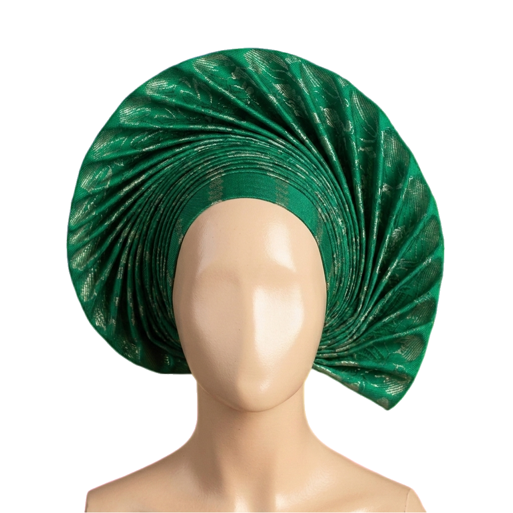
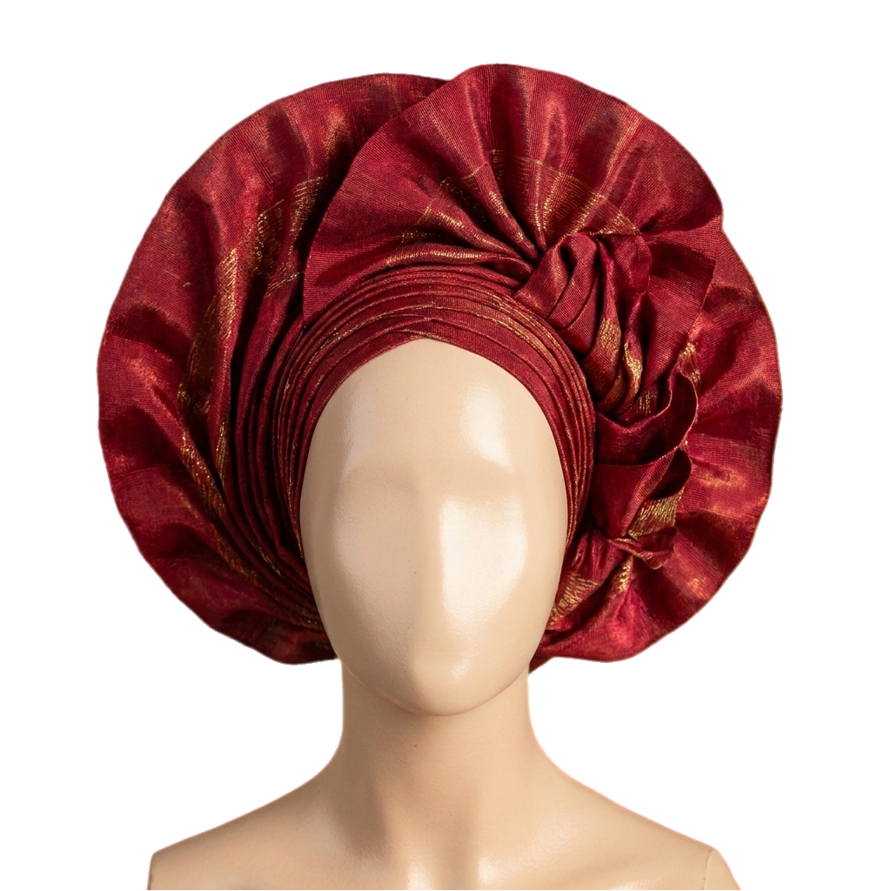
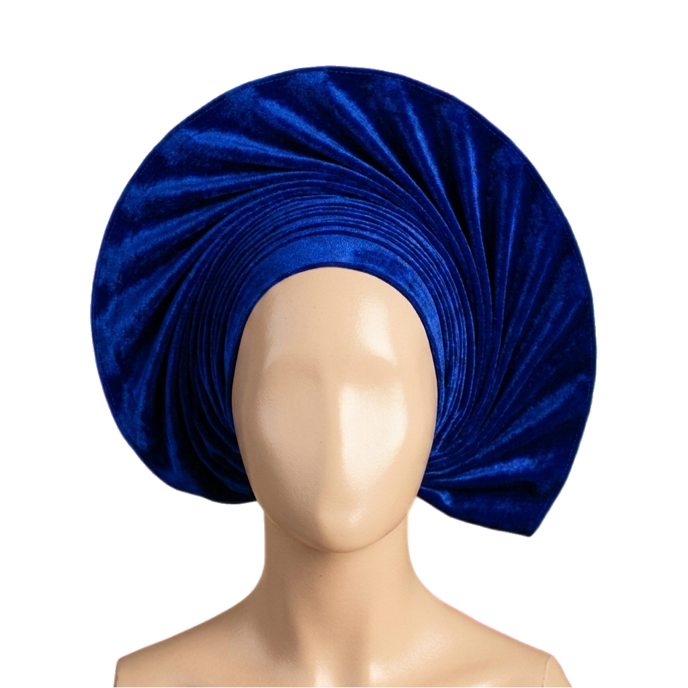
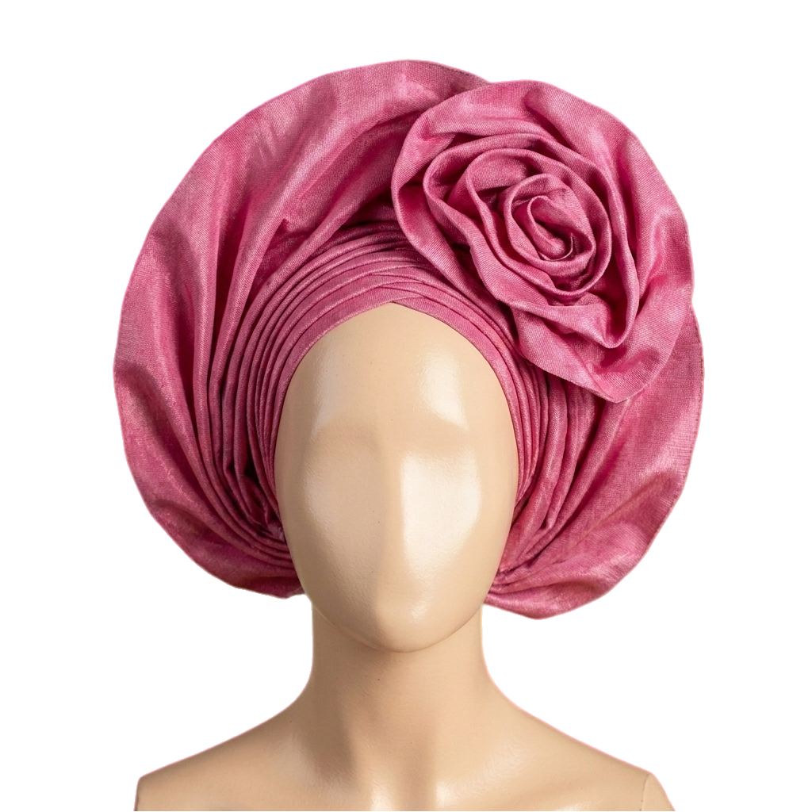
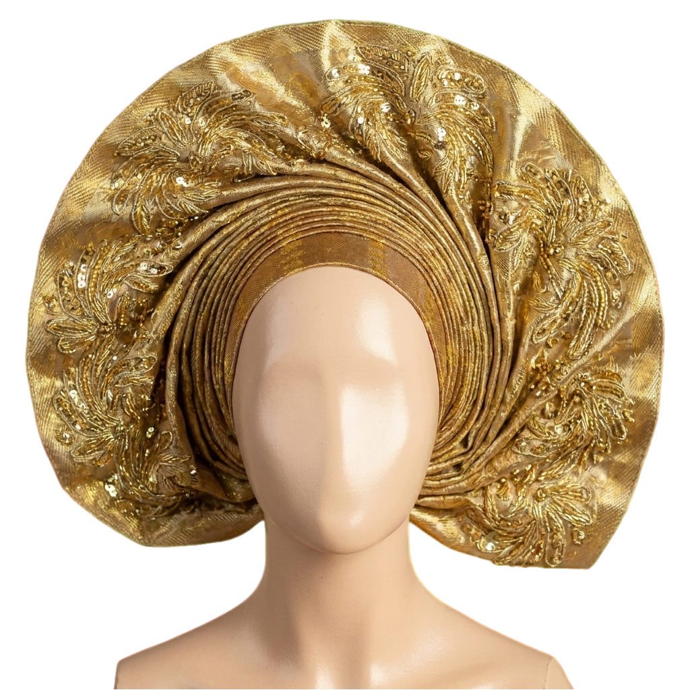
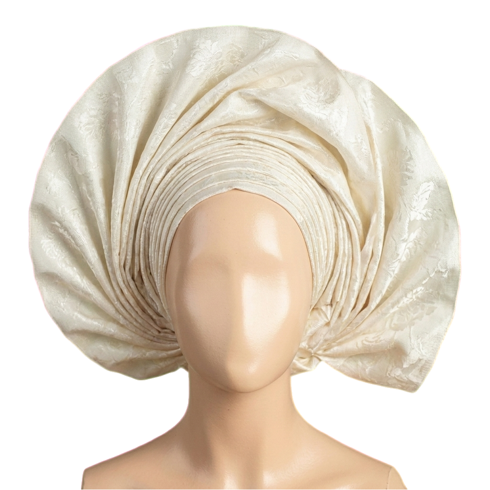
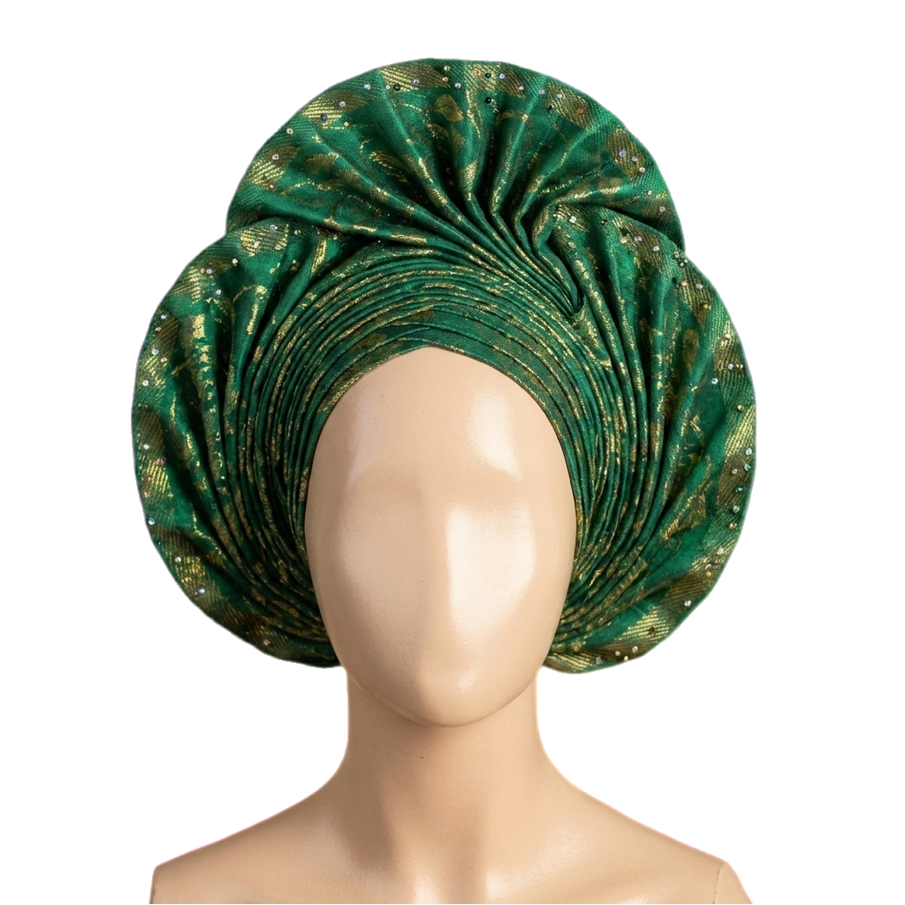
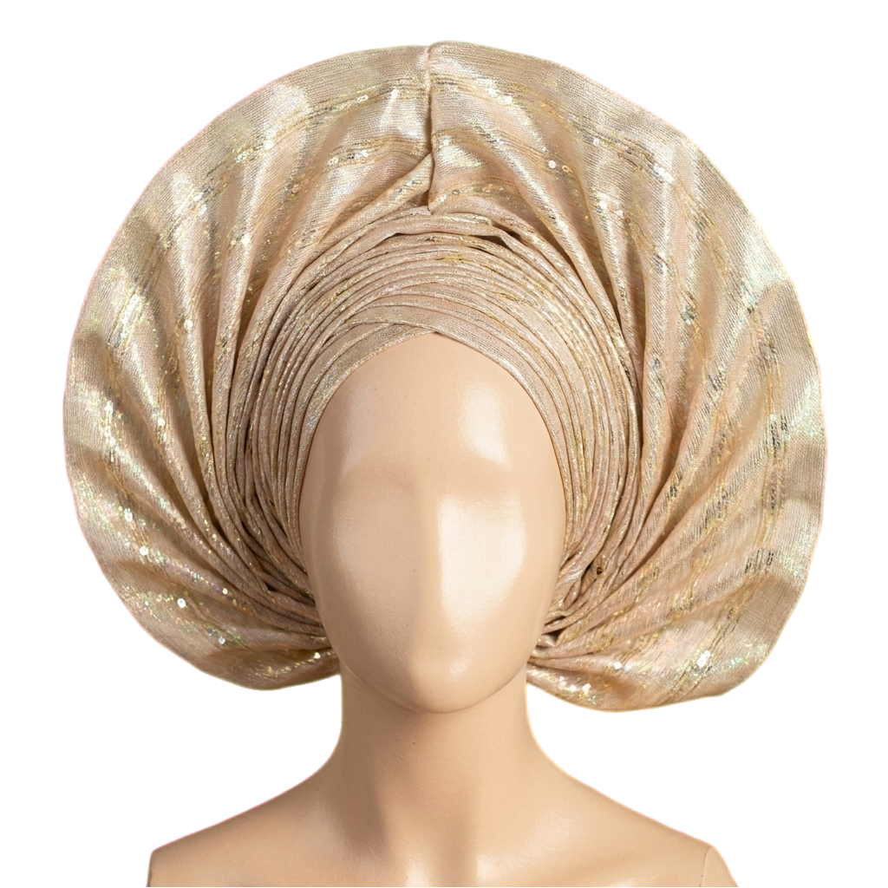
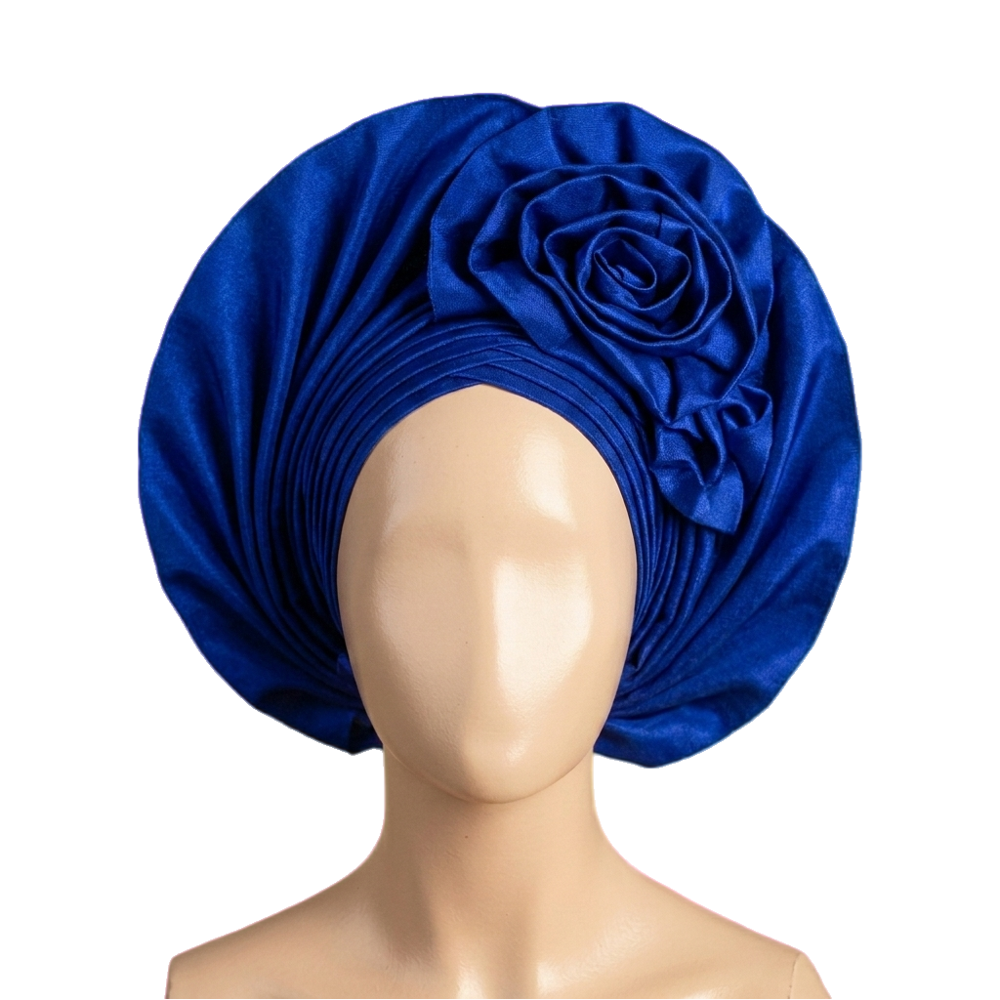

WEDDINGS
WEDDINGS
How the Nigerian Pre-Wedding Shoot Became Its Own Art Form
Once a save-the-date detail, now a full editorial — with a cast, a wardrobe and a love story rehearsed for the lens.
THE JOURNAL
Essays on heritage, lookbooks from the continent, and tutorials for the modern woman who carries her tradition with her.

A portrait of three generations of Yoruba brides, told through one length of aso-oke that has crowned every wedding since 1962.
Read the storyRECENT
WEDDINGS
Once a save-the-date detail, now a full editorial — with a cast, a wardrobe and a love story rehearsed for the lens.

WEDDINGSIn Benin, the bride wears her ancestry in coral — long red beads weighted with three centuries of royal memory.

HERITAGEHow adire dyers of Abeokuta turned cassava paste and indigo into a language of resistance.

TUTORIALMaster the single-bloom rosette in seven photographed steps — no pins, no panic.

WEDDINGSThe unwritten rules of family colour and why the most powerful gele is rarely the bride's.

STYLEFive ways to wear ceremonial cloth on an ordinary Tuesday — without losing the reverence.

LOOKBOOKPhotography from a single Saturday of weddings in Surulere — and the women who made the air glitter.

HERITAGEFrom Ife court regalia to TikTok tutorials — eight centuries of women crowning themselves.

STYLEWhy a generation of designers is returning to indigo — and dragging the rest of fashion with them.
On wedding-day reds, ancestral palettes, and the colour our grandmothers reserved for joy.
JOIN THE JOURNAL
One thoughtful essay, one lookbook, one new arrival — every other Sunday.